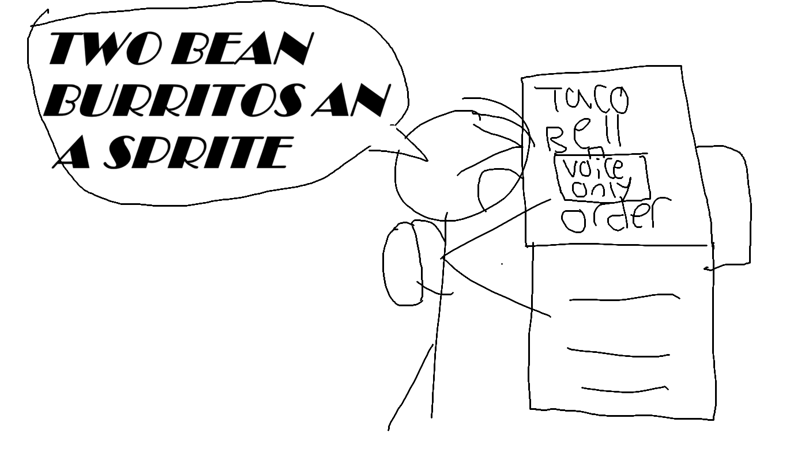

Attended by:
As we all know, the Taco Bell on campus took way too long to be constructed. They kept pushing back the build date and an entire generation graduated without ever tasting it. And now the lines at Panda Express and Subway are even longer because people walk in, remember they don't even like Taco Bell, and eat somewhere else. We need to destroy it.
Today we shall recap our unfinished business, new business, and hopefully have some that Panera Mac and Cheese they sell at the Target. No programming is to be done yet as we need to finalize our plans first, so put away your VS Code for now and pay attention.
Our last meeting didn't go very well as we were unable to acquire a comically large hammer to squash the Taco Bell with. Call up an urban planning student and ask if they can provide one.
Also, I forgot the password to my Fortnite account if anyone can remind me.
Here are the plans we are currently working at:
We will also be consulting the help of Lemongrass for future meetings.
Next week we will tape notes saying "voice activated" to the kiosks. Illustration below:

"If I can't bring burrito boxes to class, what else can I litter the floors of Center Hall with?" -Jacob
"Buy my Feastables" -MrBeast
Insightful.